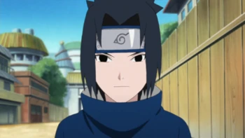
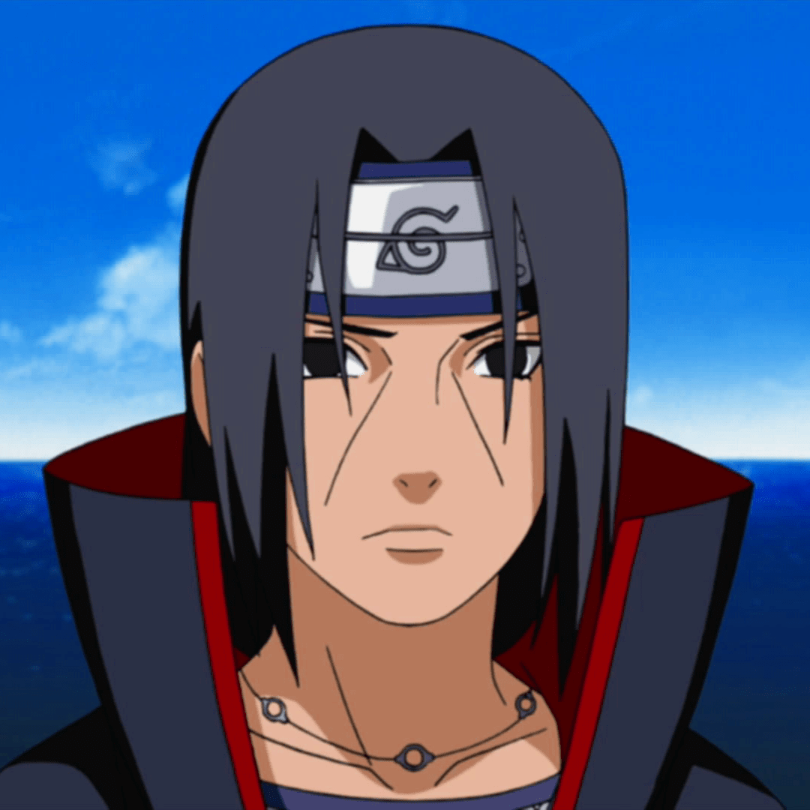

HISTÒRIA D'EN SASUKE
Sasuke és un ninja de pell clara que té ulls i cabells negres foscos a l'alçada de la barbeta. El cabell és de punta a l'esquena, amb un serrell que s'allarga com progressa la història. Com un nen petit, el seu serrell penjava sobre els ulls. Durant la seva primera infància, Sasuke portava una senzilla camisa llarga color negre amb un coll alt i l'emblema Uchiha a l'esquena, i uns pantalons curts negres (blanc a l'anime). Quan Sasuke es va unir a Itachi en la seva missió de capturar el porc senglar, Sasuke portava un uniforme ANBU. Més tard, es pengen a banda i banda de la cara per emmarcar al voltant de les seves galtes i després una altra vegada tornar al seu estil original. A l'epíleg el cabell de Sasuke cau en diagonal cap a la part posterior del seu cap deixant només els flocs frontals i per la seva edat, té dues línies diagonals que solquen la cara similars a les del seu germà Itachi. Com a conseqüència d'haver lluitat amb Naruto sobre el final de la història, Sasuke va perdre el braç esquerre producte del xoc devastador del Chidori amb el Rasengan que el va deixar greument ferit. Sasuke va rebutjar que Sakura li implantés un braç artificial amb les cèl·lules de Hashirama fet per Tsunade. Això probablement, com una manera de castigar-se a si mateix pels errors que cometés en la seva joventut.
Un tema recurrent en l'aparença de Sasuke és que es considera força atractiu per moltes noies a primerenca edat. Al començament de la primera part, la roba de Sasuke va consistir en la tradicional roba Uchiha: remera blava, de màniga curta amb coll alt i el Ventall, símbol dels Uchihas, a l'esquena i escalfadors de braços blancs, els quals va deixar d'usar després dels exàmens de Chūnin, juntament amb pantalons curts blancs. En l'última etapa dels exàmens de Chūnin, portava una versió semblant a aquest equip color negre, amb molts cinturons petits als braços dels quals adorna el seu embenat al braç esquerre i bandes similars al voltant de les dues cames. Mentre que la història avançava, el símbol Uchiha es va fer més petit fins després de derrotar el seu germà.

HISTÒRIA DEL ITACHI
Des de la seva primera aparició, Itachi sempre havia estat una persona misteriosa, i va tenir la intenció d'amagar el seu veritable 'jo'. Mentre que en el seu passat va demostrar ser un germà afectuós, compassiu i una gran persona, arribat a cert punt de la història, va haver de cometre alguns crims, arribant a assassinar els seus éssers estimats i el seu clan, deixant només un supervivent: el seu germà menor, Sasuke Uchiha. Malgrat tota la commoció dels seus actes, increïblement, va resultar ser aquell germà compassiu i de gran valor, quedant clar al llarg de la història que la seva estada a Akatsuki també tenia com a intenció protegir el seu petit germà, Sasuke, i el seu llogaret .
Com a membre d'Akatsuki, posseïa un increïble autocontrol de les seves emocions, mostrant sempre una personalitat mancada d'elles. L'única emoció demostrada per ell era sorpresa quan els seus oponents demostraven ser més poderosos o més qualificats del que ell suposava, i tot i així, no perdia del tot les maneres. Ell no posseïa cap arrogància, i justificava plenament el seu poder, fins i tot felicitant els seus oponents de les seves forces per desafiar-los, fins i tot respectar-los. Després de la seva mort, s'adona que no devia haver intentat fer les coses sol i enfrontar Sasuke pel seu compte i ara anima Naruto de nobles maneres i recordar-li el perquè lluita, que no està sol, que mai i mai no es oblida els seus preats amics.